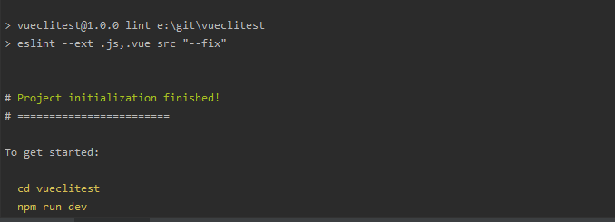
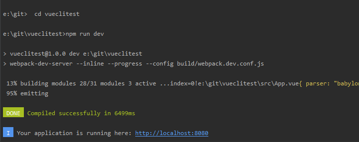

安装 vue-cli
安装vue-cli的前提是你已经安装了npm，安装npm你可以直接下载node的安装包进行安装。
你可以在命令行工具里输入npm -v 检测你是否安装了npm和版本情况。出现版本号说明你已经安装了npm和node，
我这里的npm版本为6.13.4。如果该命令不可以使用，需要安装node软件包，根据你的系统版本选择下载安装就可以了。
下载地址：nodejs官网 安装方法自行网上搜索
npm没有问题，接下来我们可以用npm 命令安装vue-cli了，在命令行输入下面的命令：
npm install vue-cli -g
- -g : 代表全局安装。如果你安装时报错，一般是网络问题，你可以尝试用cnpm来进行安装。安装完成后，可以用vue
- -V : 来进行查看 vue-cli的版本号。注意这里的V是大写的。我这里版本号是2.9.6.
如果vue -V的命令管用了，说明已经顺利的把vue-cli安装到我们的计算机里了。
初始化项目
我们用vue init命令来初始化项目，具体看一下这条命令的使用方法。
{{message}}
- init：表示我要用vue-cli来初始化项目
- {{message02}}
- webpack: 一个全面的webpack+vue-loader的模板，功能包括热加载，linting,检测和CSS扩展。
- webpack-simple: 一个简单webpack+vue-loader的模板，不包含其他功能，让你快速的搭建vue的开发环境。
- browserify: 一个全面的Browserify+vueify 的模板，功能包括热加载，linting,单元检测。
- browserify-simple: 一个简单Browserify+vueify的模板，不包含其他功能，让你快速的搭建vue的开发环境。
-simple: 一个最简单的单页应用模板。
- {{message03}}
在实际开发中，一般我们都会使用webpack这个模板，那我们这里也安装这个模板，在命令行输入以下命令：
vue init webpack vuecliTest
输入命令后，会询问我们几个简单的选项，我们根据自己的需要进行填写就可以了。
- Project name :项目名称 ，如果不需要更改直接回车就可以了。注意：这里不能使用大写，所以我把名称改成了vueclitest
- Project description:项目描述，默认为A Vue.js project,直接回车，不用编写。
- Author：作者，如果你有配置git的作者，他会读取。
- Install vue-router? 是否安装vue的路由插件，我们这里需要安装，所以选择Y
- Use ESLint to lint your code? 是否用ESLint来限制你的代码错误和风格。我们这里不需要输入n，如果你是大型团队开发，最好是进行配置。
- setup unit tests with Karma + Mocha? 是否需要安装单元测试工具Karma+Mocha，我们这里不需要，所以输入n。
- Setup e2e tests with Nightwatch?是否安装e2e来进行用户行为模拟测试，我们这里不需要，所以输入n。

命令行出现上面的文字，说明我们已经初始化好了第一步。命令行提示我们现在可以作的三件事情。
- cd vuecliTest 进入我们的vue项目目录。
- npm install 安装我们的项目依赖包，也就是安装package.json里的包，如果你网速不好，你也可以使用cnpm来安装。
- npm run dev 开发模式下运行我们的程序。给我们自动构建了开发用的服务器环境和在浏览器中打开，并实时监视我们的代码更改，即时呈现给我们。
依次进行以上操作，最终出现访问地址，可以成功访问我们的项目地址了。
